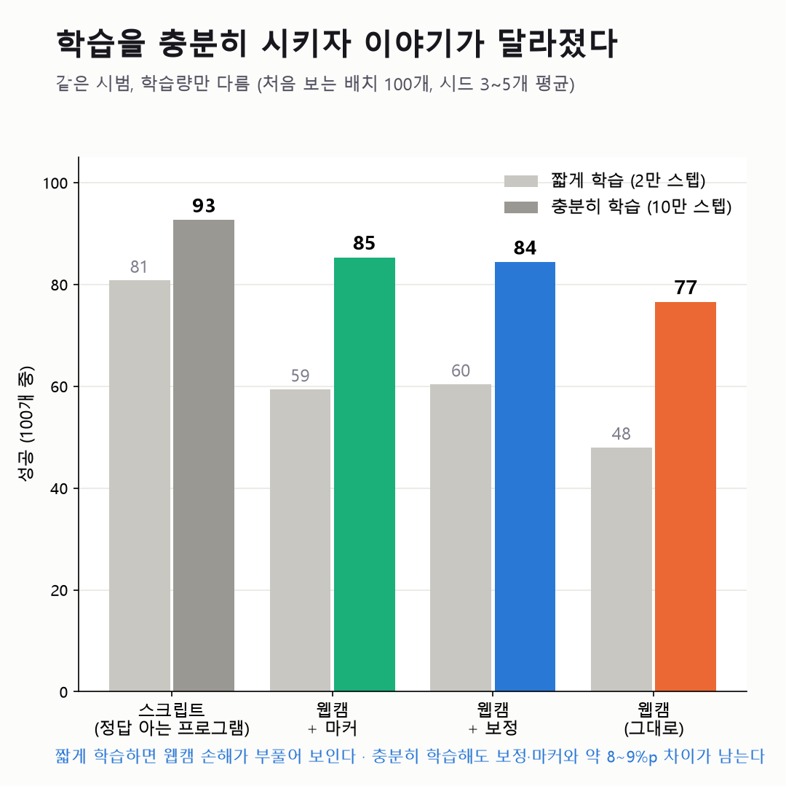

웹캠 시범은 로봇 학습에 얼마나 손해일까
2026.10 · 학습 84번같은 큐브 과제를 스크립트·웹캠·웹캠+보정·손목 마커·깊이 오차만 넣은 가상 시범 등 여섯 가지로 학습시켜(LeRobot ACT), 처음 보는 배치 100개에서 비교했습니다. 결과가 나올 때마다 다른 설명을 하나씩 지워 가며 결론을 고쳤습니다.

- 첫 결과(웹캠 손해 33%p)를 의심해 학습량을 맞추고 모든 조건을 같은 10만 스텝으로 다시 학습 → 손해는 약 17%p. 대부분은 시범이 길어 덜 배운 탓이었음.
- 같은 조종 코드에 깊이 오차만 넣고 빼자 모든 시드에서 손해, 오차를 키울수록 하락(88 → 59) — 깊이 오차가 원인임을 확인.
- "사람이 화면을 보며 바로잡는 과정도 원인 아닐까?"라는 의문에서 손목 마커 조건을 추가해, 손해를 깊이 약 9%p(경계선)와 사람 시범 특성 약 7%p로 나눔.
- 손 자세 보정은 옮기기에서 +7.8%p(시드 5개 모두)였지만, 녹화 전에 계획을 고정한 쌓기 재현에서 −8.2%p — "재현 안 됨"으로 그대로 보고. 쌓기에선 보정이 측정 범위 밖의 손 위치에서 쓰였음(사후 분석).